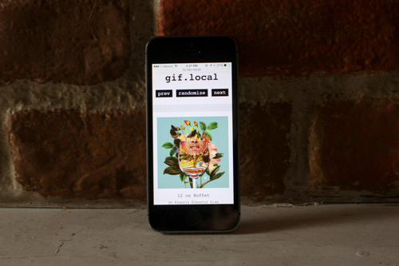

LittleNets, part of Eyebeam-Off-The-Grid, is a show of alternative networks, offering different ways of being and making online, curated by Ingrid Burrington. Rather than wire Eyebeam's temporary Governor's Island space with internet access, we decided to set up some site-specific mesh networks with things that might be useful to have on a remote island--simple communication tools, artworks, and games. Visitors to the island can view and contribute content to these networks. We'll also be hosting workshops and events to teach people about different kinds of networks and how to build them.
As the free and open web becomes increasingly concentrated and opaque in the hands of a few companies, the networks of LittleNets suggest that another net (or a multitude of nets) is still possible.
